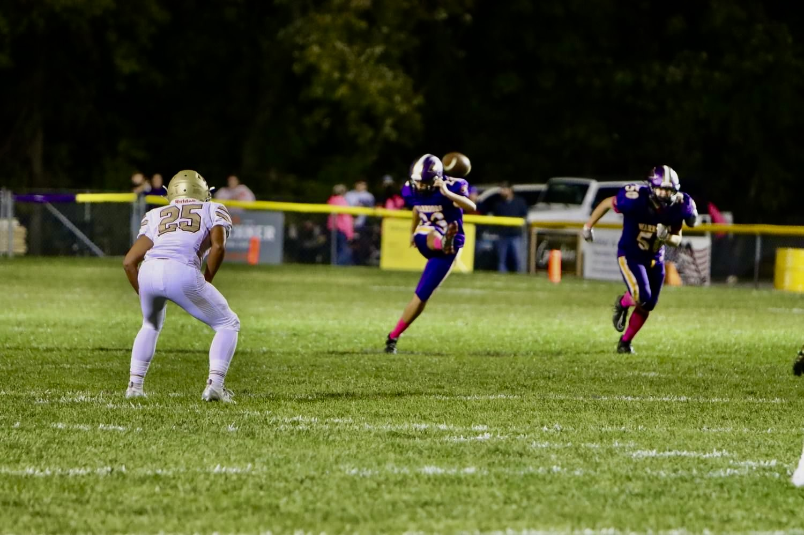
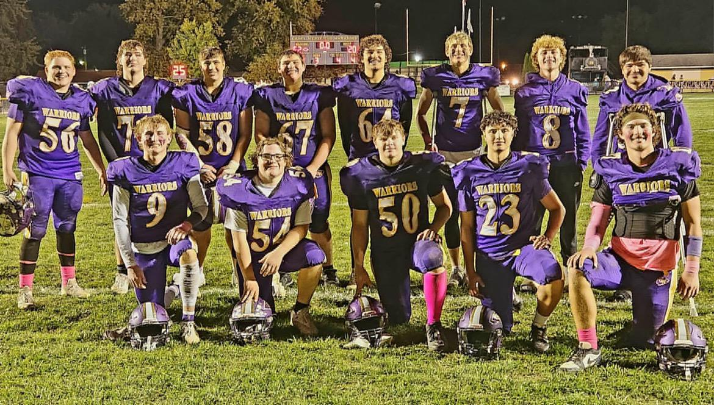

O inicio
O futebol americano iniciou na minha vida quando eu tomei uma das decisões mais dificeis e importantes da minha vida, ir morar sozinho em outro pais sem data de volta para jogar um outro esporte, o : basquete, entretanto a temporada so começava nos meses de inverno e até lá não tinha o que fazer, quando o tecnico de Futebol americano do high school me convidou para assistir um treino, para mim era um esporte novo e muito sem graça pois não sabia nada das regras .

O primeiro contato com o esporte
Em um dos treinos em que fui assistir apenas para passar o tempo o head coach Fred fez uma brincadeira e me chamou para o campo tentar chutar a bola em um filed goal, e eu acertei não so o primeiro mas as proximas 3 tentativas o que causou questionamento se eu conseguiria fazer parte do time para apenas aquela posição de kicker uma posição que enfrente muita dificuldade pois os americanos não tem afinidade com chute. kicker atual do time não era muito bom nisso e essa nem era a posição principal dele então o tecnico não teve duvida em me chamar para treinar

O time
com o time e com o passar dos dias todos puderam ver minha evolução e que eu não estava ali só de brincadeira, comecei a realmente pegar gosto por isso e me esforçar cada vez mais, quando logo no primeiro jogo da temporada já estava como titular para essa posição, e no meu primeiro jogo tive algumas oportunidades que com o passar do tempo foram crescendo, e lembro da sensação que é entrar em campo para uma partida de futebol americano como se fose hoje. Muitas vezes duvidei se isso era realmente para mim mas a cultara do futebol americano me fez uma pessoa mais persistente e resiliente para qualquer coisa que vier pela frente, por isso foi a época mais importante da minha vida.